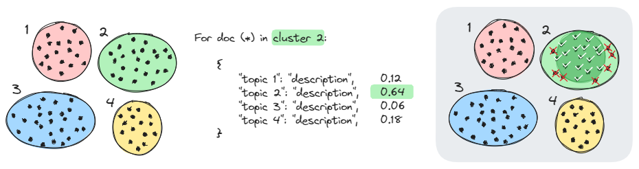
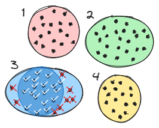

How It Works¶
The problem¶
A topic model such as BERTopic assigns every document to a topic and describes each topic with keywords. It does not tell you whether a topic's description actually fits the documents in it. Clusters are formed in embedding space, and the keywords are computed afterwards. A topic can be geometrically tight and still be described by keywords that match only half of its documents, or it can blend two themes that happen to sit close together.
Checking this usually means reading documents, labeling data by hand, or paying for many calls to a hosted LLM.
The bootstrap¶
TopicJev uses the topic model's own output as a zero-shot taxonomy, and lets an independent classifier decide where each document belongs:
flowchart TD
D[Documents] --> E["Embed<br/>LocalEmbedder"]
E --> T["Cluster and describe<br/>BERTopic, KMeans, ..."]
T --> L["Topic labels<br/>keywords or LLM-written claims"]
D --> C["Optional: compress<br/>topicjev.compress"]
L --> Z["Re-classify every document<br/>topicjev.entail"]
C --> Z
Z --> A["Compare with the topic model<br/>agreement, Other, confusion"]
A -. relabel, split, merge .-> L- Embed the documents (
LocalEmbedder). - Cluster and describe them with a topic model. TopicJev does not replace this step; the examples use BERTopic and plain KMeans.
- Turn each topic into a label: its name and top keywords, or a short checkable claim and
description written by an LLM (
LocalGeneratorwith the bundled prompts). - Optionally, compress long documents so the classifier sees their main point
(
topicjev.compress). - Re-classify every document against all topic labels with a zero-shot classifier
(
topicjev.entail). The classifier never sees the embeddings or the clusters, only the text and the label descriptions. - Compare the two assignments.

Reading the comparison¶

The comparison gives three label-free signals per topic:
- Agreement
- The share of a topic's documents that the classifier puts back into the same topic. High agreement means the description explains the documents; low agreement means it does not.
- Other
- Documents the classifier assigns to none of the topics, because no label was convincing enough or a decoy won. A large share points to topics whose descriptions are too thin or too narrow.
- Where documents go
- A cross-tabulation of topic against class shows which topics absorb another topic's documents: a sign of overlapping descriptions, or of a topic that should be split.
BERTopic + Laya walks through these signals on a real run, and checks them against the gold labels of AG News.
Possible next steps, depending on what the signals show:
- Relabel topics with low agreement, for example with an LLM-written title and description, and check again.
- Split a topic whose documents scatter over several classes; merge topics that trade documents with each other.
- Keep the core: treat the documents that both the topic model and the classifier agree on as high-confidence members of the topic, for example as seed examples for a classifier.
Why an entailment check¶
The topic model and the classifier look at different evidence. The topic model groups documents by embedding similarity; the zero-shot classifier only reads the text and a human-readable label. When both agree, the label describes its documents in a way that a separate model can verify. When they disagree, either the cluster or its description needs attention.
Because the classifier only needs label text, the check needs no training data. TopicJev's backends run on local models, from small NLI cross-encoders and ModernBERT decision encoders to instruction-tuned LLMs; the examples run on a laptop.
How a document is scored¶
Each classifier turns (document, label) pairs into scores, and TopicJev applies the same calibration to all of them:
where \(s\) is the backend's raw score, \(P\) the optional probe texts and \(T\) the temperature. The top label is accepted if \(p > 2/N\) for \(N\) labels, and the document is Other otherwise. Details are in Scoring and calibration.